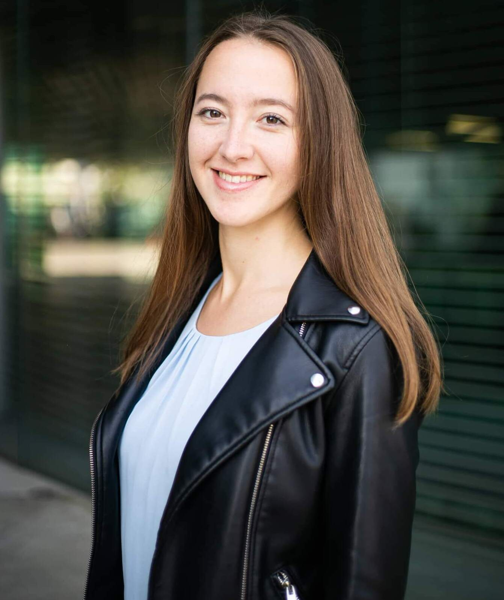

Cofounder Vitalina Kovalenko
Master of Laws, Humanities University, 2020
Geneva Graduate Institute Scholar
Total scholarship value: CHF 25000
TOEFL score: 112/120
To be announced
Bachelor of Law
To be announced
Total sholarship value: ???
IELTS Score: ???
Our Story
Our story began in 2020 when we started applying for
studies in Switzerland and United Kingdom. We felt scared,
doubtful, uncertain. There were times when one of us wanted
to give up.
In 2021, after months of nerve-racking waiting, both of us
received rejection emails. We felt low. Having each other's
back helped us go high.
We had regular check-in calls making sure that each of us
is in a good mental and emotional state. We spent countless
hours reading and correcting each other's documents,
brainstorming, and kept doing the same all over again. Most
importantly, we truly believed in each other, more than
each of us believed in herself.
Hard work paid off, and we achieved what we aimed for. In
2022, Marharyta won a Chevening scholarship, while Vitalina
got accepted to Geneva Graduate Institute with a full
tuition fee waiver worth of CHF 25.000.
We know first hand how emotionally and mentally challenging
the university application process is. Let us lend you a
helping hand and get you there!
Our Mission
Breaking down barriers and stereotypes. Yes, you can
secure admission without being in top 1% of the class. No,
there is no ideal applicant profile. Yes, education can be
accessible and affordable. No, it is no a privilege only
for well-off.
Focusing on uniqueness of each applicant. We believe
that the key for admission to any university is the ability
to convey your personal story. The admission committee is
craving to hear about your ups and downs, your battles and
winnings. We help to uncover your authentic self and show
it to admission committee.
Saving your time. Searching for programs,
scholarships, grants takes time. Writing a successful
personal statement takes practice. Filling in forms,
tracking application deadlines costs nerves. As admission
process happens only once per year, we take care of all the
annoying aspects of application process and help you
focusing on the essential part of the admission strategy -
your personal story.
Planning ahead. We believing that securing admission
is only the first step in your study journey. Every
postgraduate degree student keps questioning him/herself:
What is next? How can I secure employment after the end of
studies? Are my skills and knowledge in demand on the
market? Which roles/positions can I apply for? What are the
legal employment rules applicable in my case? Do not worry,
we got you covered. We will ask all the questions so that
you do not have to.
Our Values
Inclusion: we stand for educational opportunities
for all. In memory of our first client with vision
impairment, we provide pro bono services to all persons
with disabilities.
Professionalism: we tailor our services towards the
needs of each individual client and the requirements of a
particular university. We do neither copypastying nor
copycating.
Partnership: our project is based on a simple idea
that it is easier to walk the walk together, rather than
alone. That requires partnership. For us, it is about
having a reliable and trustworthy connection, which we
aspire to build with each of our client.